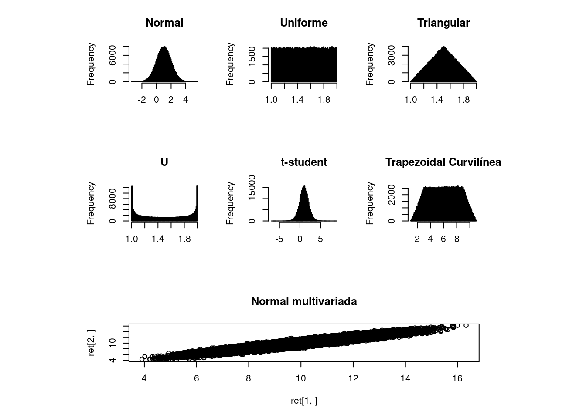

Segue a sequência de passos necessários para simulação numérica visando a identificação da qualidade do resultado do método analítico.
Definição do Modelo Matemático (\(f_{mc}=f_a\))
Cálculo da quantidade de valores aleatórios (\(M=\frac{10^4}{1-\%}\)) de acordo com o grau de confiança desejado.
Cálculo das incertezas tipo A e identificação dos limites e das funções de distribuição para as incertezas tipo B tal qual:
- Função Densidade de Probabilidade Normal. ex.: certificados de calibração.
- Sendo \(x\) a média e \(s\) o desvio padrão, tem-se:
rnorm(M, mean=x, sd=s)
- Função Densidade de Probabilidade Uniforme. ex.: resolução do dispositivo mostrador.
- Sendo \(a\) e \(b\) os valores limites, tem-se:
runif(M, min=a, max=b)
- Função Densidade de Probabilidade Triangular. ex.: indicador em instrumentos analógicos.
- Sendo \(a\) e \(b\) os valores limites tem-se:
rtrng <- function(M, a=0, b=1) {
x <- a + (b - a) / 2 * (runif(M) + runif(M))
return(x)
}
- Função Densidade de Probabilidade do Tipo “U”. ex.: temperatura ambiental contralada por termostato.
- Sendo \(a\) e \(b\) os limites tem-se:
rtypu <- function(M, a=0, b=1) {
x <- (a + b) / 2 + (b - a) / 2 * sin(2 * pi * runif(M))
return(x)
}
- Função Densidade de Probabilidade t-student. ex.: conhecidos valor médio \(\bar{x}\), incerteza expandida \(U_p\), fator de brangência \(k_p\) graus de liberdade efetivos \(\nu_{eff}\).
- Sendo \(\nu=\infty\) deve-se utilizar a função normal para representação da incerteza.
- Sendo \(\nu=n-1\) os graus de liberdade \(a\) a média \(\bar{x}\) e \(b\) o desvio padrão experimental \(s^2/n\), ou
- Sendo \(\nu=n-1\) os graus de liberdade \(a\) a média \(\bar{x}\) e \(b\) o desvio padrão experimental \(U_{p}/k_p\), onde \(U_{p}\) é a incerteza expandida e \(k_p\) o fator de abrangência, tem-se:
rtstu <- function(M, nu, a=0, b=1) {
x <- a + b * rt(M, nu)
return(x)
}
- Função Densidade de Probabilidade Trapezoidal Curvilínea. ex.: limites superior e inferior inexatos.
- Sendo \(a\) e \(b\) os limites e \(d\) a incerteza destes limites tem-se:
rctrp <- function(M, a=0, b=1, d=0.1) {
as = (a - d) + 2 * d * runif(M)
bs = (a + b) - as
x <- as + (bs - as) * runif(M)
return(x)
}
- Função Densidade de Probabilidade Normal Multivariada. ex.: aplicação para variáveis correlacionadas.
- Sendo a matriz de correlação onde \(r(x_i,x_i) = 1\): \[ R_{x} =
\begin{bmatrix}
r(x_1,x_1) & \cdots & r(x_1, x_N)\\
\vdots & \ddots & \vdots \\
r(x_n,x_1) & \cdots & r(x_N,x_N)
\end{bmatrix} \]
- Sendo \(D_x\) uma matriz diagonal de dimensões \(N x N\) com elementos \(u(x_1), \cdots, u(x_n)\).
- Tem-se \(U_x = D_x R_x D_x\) e, sendo \(z = (z_1, \cdots, z_N )^T\) valores aleatórios de acordo com uma distribuição normal e \(R\) a matriz resultante da fatoração de Cholesky (\(U_x = R^TR\)), tem-se: \[\xi = x + R^T z\]

Geração dos vetores de valores aleatório para as variáveis de \(f_{mc}\) com base em seus valores médios e limites de incerteza.
Cálculo do vetor \(f_{mc}\).
Identificação dos limites para o % desejado (quantil):
- Se \(95\%\): \(y_{baixo}=quantile(f_{mc}, 0.025)\) e \(y_{alto}=quantile(f_{mc}, 0.975)\) (para uso no R).
- Se \(99\%\): \(y_{baixo}=quantile(f_{mc}, 0.005)\) e \(y_{alto}=quantile(f_{mc}, 0.995)\) (para uso no R).
Cálculo de \(\delta_1\) e \(\delta_2\):
- expressando \(z\) na forma \(c\times 10^l\), onde \(c\) é um \(n_{dig}\) decimal inteiro e \(l\) é um inteiro
- \(\delta=\frac{1}{2}\times 10^l\) sendo:
- \(\delta_1\): Erro de arrendondamento (resolução) no \(U_c\) quando apresentado com 1 Algarismo Significativo
- \(\delta_2\): Erro de arrendondamento (resolução) no \(U_c\) quando apresentado com 2 Algarismo Significativo
Cálculo das diferenças:
- \(D_{baixo}=|f_a - U_{exp} - y_{baixo}|\)
- \(D_{alto} = | f_a + U_{exp} - y_{alto}|\)
Comparação entre \(D_{baixo}\) e \(D_{alto}\) e \(\delta_1\) e \(\delta_2\)
- Se \(\delta_2\) for superior a \(D_{baixo}\) e \(D_{alto}\) pode apresentar o resultado com 2 Algarismos Significativos
- Se \(\delta_1\) for superior a \(D_{baixo}\) e \(D_{alto}\) pode apresentar o resultado com 1 Algarismos Significativos
- Se \(\delta_1\) for inferior a \(D_{baixo}\) ou \(D_{alto}\) é necessária a substituição de sensores para melhorar a simetria da função de distribuição \(f_{mc}\)
Copyright © 2020 Guilherme Kunz, Inc. All rights reserved.